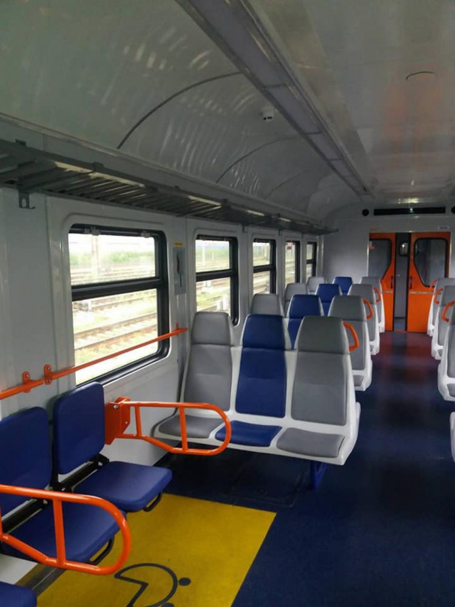

Електричка Київ—Ніжин почала курсувати частіше з 1 вересня з новим сучасним потягом. Про це повідомляє Depo.Київ з посиланням на Facebook-сторінку мера Ніжина Олександра Кодоли.
За його словами, оновлений електропотяг, який має вісім вагонів курсуватиме в будні дні. Потяг відправлятиметься о 5 : 47 зі станції Ніжин та о 8 : 01 прибуватиме на Борщагівку-техн. З Борщагівки-технічної електропоїзд № 7062 відправлятиметься о 16:42 хвилини та прибуватиме до Ніжина о 18:58.

Детальний розклад:
- Ніжин - 5.47, Носівка - 6.05, Кобижча - 6.14, Бобровиця - 6.24, Заворичі - 6.39, Бобрик - 6.45, Бровари - 7.01-7.02, Київ-пост 837 км - 7.10, Дарниця - 7.16-7-18, Видубичі - 7.26-7.28, Київ-Деміївський - 7.31, Київ-Товарний - 7.36, з.п. Північна - 7.38-7.40, Київ-Волинський - 7.50-7.54, Борщагівка-техн. - 8.01.
- Борщагівка-техн. - 16.42, Київ-Волинський - 16.49, з.п. Північна - 17.00-17.03, Київ-Товарний - 17.05, Київ-Деміївський - 17.13-17.19 (техн.), Видубичі - 17. 21-17.23, Дарниця - 17.33-17.35, Київ-пост 837 км - 17.40, Бровари - 17.47-17.48, Бобрик - 18.03, Заворичі - 18.09, Бобровиця - 18.23, Кобижча - 18.33, Носівка - 18.40, Ніжин - 18.58.
Нагадаємо, у Києві представили швейцарський п'ятивагонний електропоїзд Stadler Flirt. Зараз "УКРЗАЛІЗНИЦЯ" тестує потяг для запуску на маршруті приміського сполучення Києва та міської електрички. Поїзди такого класу компанія планує використовувати на маршрутах приміського сполучення в рамках реалізації проєкту City Express у Києві, Дніпрі, Харкові.